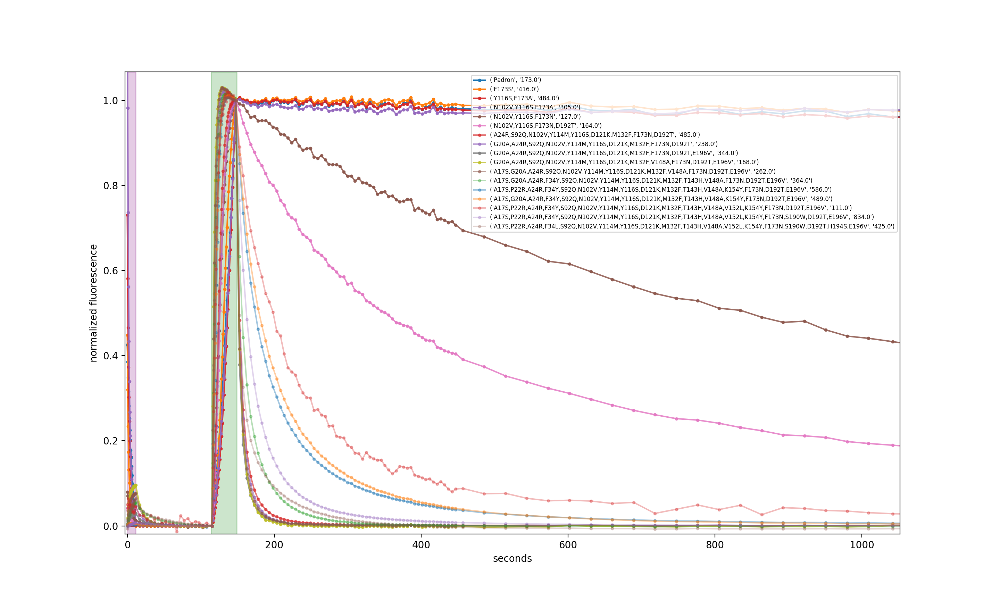

Relaxation Sensors
This project is maintained by Maria Ingaramo in the York lab, and was funded by Calico Life Sciences LLC
Appendix
Note that this is a limited PDF or print version; animated and interactive figures are disabled. For the full version of this article, please visit https://andrewgyork.github.io/relaxation_sensors
Relaxation Sensors
Mammalian cell imaging
We prepared COS7 cells transiently expessing pH-Countdown targeted to the mitochondrial matrix using a COX8A presequence. We imaged the samples in live cell imaging solution (ThermoFisher, A14291DJ) + 5 mM glucose at 35°C on a DMI8 widefield microscope controlled with micromanager using a 63x 1.4 NA oil objective, a 515/30 nm emission filter, and a SpectraX LED illumination source with 395/25 or 470/24 nm excitation filters. Samples were prepared in 8 well #1.5 glass chambers (Cellvis) and the temperature was maintained using an Okolabs enclosure system. Data was acquired in the 'disruptive' regime with a 2 second decay period after activation. We induced uncoupling (which is expected to lower mitochondrial pH) by adding a final concentration of 3 μM CCCP. The relationship between pH values and relaxation rates at this temperature were calibrated using cells permeabilized with 10 μM nigericin in 200 μL Spexyte buffers (AAT Bioquest) + 300 μL Carmody buffers supplemented with 100 mM KCl at pH 6.5, 7, 7.5 and 8.
These cultured cells are transparent, with almost no detectable scattering or autofluoresence, so they're well suited for dual-color intensity sensors like ratiometric pHluorin or SNARF. Unfortunately for relaxation sensors, the mitochondria move quickly, sometimes changing position by several pixels during our 2 s relaxation interval. Therefore we used whole-cell relaxation ratios as a simple estimator of cell-averaged mitochondrial pH, which is robust against motion artifacts.

Yeast
Yeast (S. cerevisiae BY4741) expressing pH-Countdown from a p416 plasmid and pHlorina (a pH-sensitive, ratiometric red fluorescent protein derived from mApple) from a p413 plasmid were grown in synthetic media without URA or HIS for 24 hours. 6150 µL of fresh media were inoculated with 50 µL of the overnight growth, and sampled every 75 minutes for OD600 and fluorescence measurements. To measure pH-Countdown relaxation ratios and pHlorina fluorescence excitation ratios, we used a Leica DMI8 wide-field microscope with a SOLA light engine, a 40X 0.85 NA objective, a 1.6X mag changer, and DAPI, GFP, TXR cubes, and a custom cube (Semrock FF01-440/40, FF470-Di0, FF01-585/40). We measured relaxation ratios in the 'disruptive' regime, with a spontaneous decay interval of 15 seconds. Calibration was done in permeabilized yeast in Carmody buffer, pH 6 to 8, with 0.1% digitonin.
Cytosolic pH in yeast is known to be correlated with growth rate. pH-Countdown reveals a decrease from pH ~7.4 to ~6.8 as the culture reaches saturation, which matches the trend reported by pHlorina.
| Plot: |
Relaxation rate temperature dependence
We imaged Ni-NTA (cOmplete resin, Roche) agarose beads with bound pH-Countdown in the 'non-disruptive' mode on a DMI8 wide-field microscope controlled with Micro-Manager using a 10x 0.23 NA air objective, a 515/30 nm emission filter, and a SpectraX LED illumination source with 395/25 or 470/24 nm excitation filters. Samples were in Carmody buffer and temperature was maintained using a VAHEAT control system.

| Plot: |
Relaxation rate dependence on buffer components
Ni-NTA (cOmplete resin, Roche) agarose beads with bound pH-Countdown were imaged on a wide-field microscope in different solutions using the 'non-disruptive' acquisition mode. We measured NaCl, KCl, MgCl2, MgSO4, glycerol, DTT, and peroxide dependencies in 45 mM sodium phosphate buffer, pHed to 8 at room temperature, by mixing solutions from concentrated stocks. CaCl2 was titrated in HEPES buffer, pH 8, to avoid calcium phosphate precipitation. The above mentioned experiments were carried out at 30°C using an Okolab temperature controlled enclosure. Screening of buffering agent effects was done at 25°C with a VAHEAT temperature control system, using buffers with pH adjusted at 25°C.

| Confounding factor: |
Robustness of pH-Countdown relaxation rates against scattering, background and attenuation
To investigate robustness against scattering, attenuation and background, we imaged 5 μL drops of 7 mg/mL pH-Countdown in Carmody buffer sandwiched between a slide and a coverslip, contained using 0.5 mm thick silicone spacers with 6.6 mm diameter holes. We covered the sample with ground glass (DG100X100-120, DG100X100-220, DG100X100-600 or DG100X100-1500, Thorlabs) to assess the effect of scattering, with neutral density filters (NE201B, NE202B, NE203B or NE204B, Thorlabs) to assess the effects of attenuation, or with hybridization chambers (70333-50 and 71862-01, EMS) filled with different concentrations of fluorescein in PBS to assess the effects of fluorescent background. Temperature was set to 25°C using an Okolab stage-top chamber, and imaged in the 'non-disruptive' mode on our custom fluorescence photography setup. As we hoped, measured relaxation rates are robust against scattering, background, and attenuation, which makes relaxation sensors particularly well suited for imaging in tissues.

| Confounding factor: |
Notes on the directed evolution of Countdown
We originally started this journey through mutational space because we wanted a "two-step" fluorophore that rapidly spontaneously deactivates. We started with Padron because that's what we'd been using. In hindsight, Padron had some important flaws. For example, its oligomerization state strongly affects its contrast ratio, and its maturation is extremely slow. Padron also takes more than two hours to spontaneosly deactivate. We were in for a long journey. Over the years, we learned many important things about mutagenesis, screening, and the protein itself, including:
How to make libraries:
- Random mutagenesis (e.g. Agilent Genemorph II) was suprisingly useless in our hands, possibly because the resulting library sizes were much bigger than our screening throughput. Perhaps if we'd had a flow-cytometry-based screen with throughputs of 106 mutants/day, this would have worked better, but our plate-based screening throughput was closer to 104 mutants/day. As a result, depending on the degree of mutagenesis, we ended up screening libraries that either had mostly unmutated protein, or mostly nonfluorescent over-mutated variants.
- Semi-random/semi-rational mutagenesis worked great, at first. We would "rationally" pick a location on our protein, make a small library of all 20 mutants at that location, and screen a plate of those ~20 mutants. We'd repeat this process for several locations, before picking a new champion for further mutagenesis. We produced our first ~5 mutations this way.
-
Semi-random mutagenesis at every residue worked even better. We ordered 448 primers (~$2000), and used them to make all single mutants at all locations (4480 mutants). We'd then pool the mutants into a single library, spread the library across ~10 plates and screen for a winner. After selecting a winner, it costs ~$60 to update the primers for the new champion.
- We were initially reluctant to spend $2000 on primers, but this works much better than anything else we tried, and is very cheap compared to the cost of labor and the value of our time.
- The size of this library (104 mutants) matches the rough daily throughput of our plate-based screen. In general, the size of one's libraries should relate to the throughput of one's screen.
- We had great results when we simply reused the same primers for multiple consecutive rounds, rather than updating primers at each round. This probably selected against multiple consecutive nearby mutations, but maybe this is good?
- We also had great results when we would pick multiple winners, rather than a single winner at each round; we often picked and pooled ~10 winners as the starting point for the next round of mutagenesis. If you're more concerned with progress than insight, you don't even have to sequence your winners, you can just keep mutating and screening for several iterations.
How to screen libraries:
- Screening E. coli colonies on plates worked well and wasn't too difficult. However, the fluorophore is probably at high concentration inside the E. coli, and we worried this might select for oligomerization-dependent photophysics rather than a high-performance monomer.
- We eventually switched to lysing E. coli onto nitrocellulose, which lets us control the chemical environment of the fluorophore. We also suspect this lowers the effective concentration of the fluorophore, and perhaps selects against oligomerization-dependent photophysics.
- Our first screen had a much smaller field of view (<1 cm2), and used an XY stage to tile a full plate. 1-2 years later, we switched to a much bigger XY stage that let us tile multiple (~10) plates. Since the fluorophore's spontaneous switching was still quite slow at the time, most of the screening time was spent waiting, and this increased our throughput by an order of magnitude.
- This past year, we switched to our current screen with a full-plate (~10 cm) field-of-view, which is much nicer to use. Since the protein decays in seconds now instead of hours, it's human-tolerable to manually switch one plate at a time for ~10 plates in a row (~1 hour). Since we plan to further accelerate the off-switching of pH-Countdown, we should probably add a large XY stage to this screen so we can load ~10 plates at a time. In hindsight, we should have upgraded our screen much sooner.
- It's not obvious that pooling the full library into one pool is optimal. Arguably, if we're going to screen ~10 plates, pooling into ~10 sub-libraries, rather than a single large library, would potentially yield more immediate insight into which mutation locations have which photophysical effects.
Some things we learned about the protein:
- Padron's maturation is extremely slow, which turned out to be a major unexpected bottleneck. Our first mutation (at position 173) was a huge improvement, which made maturation go from several days to <1 day.
- Mutations that made spontaneous switching faster almost always made light-driven switching faster too. Maybe once we found a mutation that seemed to affect photoswitching rates differently from how it affected spontaneous switching, but we did not stop to verify the behavior.
- At one point, we failed to find a mutant we considered "better" by screening all the single mutants. In desperation, we made a double-mutant library (with >106 members), and screened unhappily until we found an improved double mutant. In hindsight, it's surprising how well a simple nearest-neighbor hill-climbing search strategy worked, and fortunate that we only had to do this once.
- We were fairly flexible in our definition of "better" when selecting candidates for the next round of mutagenesis. We mostly selected for switching speed, but we also wanted to preserve on-state brightness, off-state darkness, cyan-driven on-switching, violet-driven off-switching, and equilibrium to the off-state. Sometimes we'd spend a round or two to improve brightness or equilibrium without improving switching speed. We would often accept a small drawback in exchange for a large advantage, and it often took several iterations to produce a strict improvement.
- Most of our screening was done without temperature or pH control. In hindsight, it's miraculous that this worked as well as it did.
The figure below shows (photo)switching kinetics for 17 representative mutants from our ~30-iteration mutational series, beginning with Padron and ending with pH-Countdown, taken in a single batch. This work spanned many years and multiple transitions in our careers, but we're happy to share whatever information we have access to, if someone is interested in more detail.
Screening for pH-sensitive relaxation
We created libraries for saturated mutagenesis at every residue using rolling circle PCRs with NNK primers for every coding residue on a pQE31-Countdown plasmid. PCRs were pooled, DPN-I digested, and transformed into BL21(DE3) E. coli. After overnight growth and one day at room temperature, we blotted the plates onto nitrocellulose filters. The filters were dipped in liquid nitrogen three times, submerged in Carmody buffer at pH 7.5 with 10 μM CCCP, imaged on our custom fluorescence photography setup, and then imaged again after transfer to Carmody buffer at pH 5.5 with 10 μM CCCP. Colonies that displayed the largest rate difference during the first 20 seconds of decay were selected from the original agar plates after a second overnight growth. The winners were subjected to subsequent saturated mutagenesis rounds.
Library construction for the calcium-sensitive relaxation sensor
We constructed libraries screening for linker length and residue type using Gibson assembly. The pH-Countdown insert and GECO 1.2 plasmid were PCR amplified using the primers indicated below. The screening procedure was similar to the pH screening method, except that the nitrocellulose filters were washed in 50 mM Tris pH 8 + 1 mM EGTA, and imaged in the same buffer with either 100 μM EGTA or 3 mM CaCl2.
| Primer Name | Sequence |
|---|---|
| 2GCO_plasR | TGAGCTCAGTCTTCCAATGGCACGAACAGCATGC |
| 2GCO_plasf | GACCAGTTAACCGAGGAACAAATAGCTGAGTTCAAGGAAG |
| 2GCO_Of | CCATTGGAAGACTGAGCTCASSNatggtgagcaagggcgaggagaac |
| 2GCO_m2f | CCATTGGAAGACTGAGCTCASSNaacaacatggccgtgattaaaccagacatg |
| 2GCO_2f | CCATTGGAAGACTGAGCTCASSNgccgtgattaaaccagacatgaagatcaagc |
| 2GCO_3f | CCATTGGAAGACTGAGCTCASSNgtgattaaaccagacatgaagatcaagctgcg |
| 2GCO_4f | CCATTGGAAGACTGAGCTCASSNattaaaccagacatgaagatcaagctgcgtatgg |
| 2GCO5_5f | CCATTGGAAGACTGAGCTCASSNaaaccagacatgaagatcaagctgcgtatggaag |
| 2GCO_6f | CCATTGGAAGACTGAGCTCASSNccagacatgaagatcaagctgcgtatggaaggc |
| 2GCO_8f | CCATTGGAAGACTGAGCTCASSNatgaagatcaagctgcgtatggaaggctctg |
| 2GCO_10f | CCATTGGAAGACTGAGCTCASSNatcaagctgcgtatggaaggctctgtaaatg |
| 2GCO_0r | TGTTCCTCGGTTAACTGGTCNSScttgtacagctcgtccatggcc |
| 2GCO223r | TGTTCCTCGGTTAACTGGTCNSSggcctgcctcggcagctcag |
| 2GCO220r | TGTTCCTCGGTTAACTGGTCNSScggcagctcagaatgtgcttcggc |
| 2GCO219r | TGTTCCTCGGTTAACTGGTCNSScagctcagaatgtgcttcggcatgctc |
| 2GCO217r | TGTTCCTCGGTTAACTGGTCNSSagaatgtgcttcggcatgctcatgcag |
| 2GCO215r | TGTTCCTCGGTTAACTGGTCNSStgcttcggcatgctcatgcagattaac |
| 2GCO213r | TGTTCCTCGGTTAACTGGTCNSSggcatgctcatgcagattaacattactgtaatc |
| 2GCO213r | TGTTCCTCGGTTAACTGGTCNSSctcatgcagattaacattactgtaatctttgtcg |
C. elegans imaging
We used a standard microinjection procedure to introduce 25 ng/μL Peft-3::pH-Countdown::unc-54 pUC57 plasmid mixed with 20 ng/μL pRF4 into the gonads of young N2E hemaphrodite C. elegans. Progeny displaying the roller phenotype were inspected for sensor expression after 48 hours at 25°C. For imaging, we placed the worms on 3% agarose pads containing a drop of 2 mM levamisole (to paralyze them) and covered them with a #1.5 coverslip. We imaged the samples on a DMI8 widefield microscope controlled with micromanager using a 40x 0.85 NA air objective, a 515/30 nm emission filter, and a SpectraX LED illumination source with 395/25 or 470/24 nm excitation filters.
Data were acquired in the 'disruptive' regime. We used a series of violet light exposures to rapidly push pH-Countdown into the inactive state, before using a series of 50 ms, 1.7 W/cm2 cyan light exposures to produce an activation curve, and a single delayed cyan light exposure to measure the amount of relaxation. We calibrated the relationship between relaxation and pH by imaging Ni-NTA (cOmplete resin, Roche) agarose beads with bound pH-Countdown in Carmody buffers at several different pHs, with the same temperature and microscope settings.
Mouse imaging
We generated CT26 cell lines expressing pH-Countdown using lentivirus infection with psPAX2, pMD2.G and either pCDH-pH-Countdown or pCDH-mito-pH-Countdown, and sorted via flow cytometry to select for the top 10% brightest cells.
We produced tumors under the skin of BALB/cJ mice by injecting 250000 CT26 cells in 50 μL PBS under the flank skin. We imaged the mice on our custom fluorescence photography system 1.5 weeks post-inoculation, before and after intravenous injection of 200 μl of 0.75 mg/mL BAM15 in 10% NMP/10% Kolliphor in the lateral tail vein. Mice were anaesthetized during imaging via isoflurane, temperature was maintained at 37°C using a heating pad, and hair was removed using Nair before imaging. We calibrated the relationship between relaxation and pH by imaging pH-Countdown in Carmody buffers at several different pHs, with the same temperature and imaging settings.
All research was performed as part of Calico Life Sciences LLC AAALAC-accredited animal care and use program. All research and animal use in this study was approved by the Calico Institutional Animal Care and use Committees (IACUC).
Custom fluorescence photography setup

For large samples where microscopy was unneccesary, we acquired fluoresence photographs on a custom-built setup (detailed parts list below) controlled with a python script. For imaging capillaries, we diluted 2 μL of 35 mg/mL solution of purified pH-Countdown into 8 μL of Carmody buffers, and loaded 5 μL into capillary tubes later sealed with epoxy. A housing to prevent crosstalk was built using a silicone mat cut to fit the capillaries, and covered with black tape. Our set up is capable of delivering ~50 mW/cm2 of blue light or violet light to a 10 cm Petri dish. We typically deliver ~500 μs pulses of 10 mW/cm2 cyan light during measurement, which yields substantial signal but minimal photoactivation.
| Part | Information |
|---|---|
| Blue excitation filter | Chroma et470/40 |
| Emission filter | Chroma et525/50 |
| Violet excitation filter | 395/25 |
| Camera | PCO edge 4.2 bi |
| Lens | Zeiss Milvus 100mm F/2M ZF.2 |
| Analog card | PCIe-6738 Analog Output Device: 32 Analog Outputs (16-bit) (785822-01, NI) |
| Connector block | SCB-68A Noise Rejecting, Shielded I/O Connector Block (782536-01, NI) |
| Daq cable | SHC68-68-A2, 68-Pin Male VHDCI to 68-Pin Female SCSI, 1m Cable (157599-01, NI) |
| Output cables | BNC Male to Unterminated Lead Cable 24 Inch Length Using RG58 Coax (PE33565-24, Pasternack) |
| Rolling cart | 42X24X35 WELDED 3-SHELF CART (H-4156, Uline, Inc.) |
| Breadboard | Aluminum Breadboard, 600 mm x 900 mm x 12.7 mm, M6 Taps (MB6090/M, Thorlabs) |
| Blue LED driver | High-Power 1-Channel LED Driver with Pulse Modulation, 10.0 A Max, 50.0 V Max (DC2200, Thorlabs) |
| Violet LED driver | High-Power Driver for Solis® LEDs 10 A Max 14.0 V Max (DC20, Thorlabs) |
| Blue LED | High-Power LED for Microscopy, 470 nm (Blue), 3.0 W (Min) (SOLIS-470C, Thorlabs) |
| Violet LED | High-Power LED for Microscopy 405 nm (UV) 3.9 W (Min) (SOLIS-405C, Thorlabs) |
| 3 x Right-Angle Clamp | Right-Angle Clamp for Ø25.0 mm Posts (RSA90/M, Thorlabs) |
| Blue illumination lens | f=100 mm ⌀2" Achromatic Doublet SM2-Threaded Mount ARC: 400-700 nm (AC508-100-A-ML, Thorlabs) |
| Base | Rigid stand for 1.5 inch post (LPH200, Thorlabs) |
| Base post | 1.5 inch post (P250/M, Thorlabs) |
| ⌀25 mm posts | 2 x RS300/M, RS150/M, 3 x RS100/M (Thorlabs) |
| Pedestal Bases | 3 x BE1/M (Thorlabs) |
| Cubes | 3 x RM1G (Thorlabs) |
| Filter holders | 2 x SM1L05 (Throlabs) |
| Extension tube | SM2 Extension Tube (SM2E60, SM2L30, SM2L15, Thorlabs) |
| SM2 adapter | 2 x SM2A6 (Thorlabs) |
| Filter holders | 2 x SM1L05 (Thorlabs) |
Disruptive vs non-disruptive imaging modes
pH-Countdown requires a relatively low dose of cyan light in order to activate. As a result, at high magnifications, where there are few fluorophores per pixel, it becomes challenging to take high SNR pictures that do not cause substantial activation. In this context, we image in a 'disruptive' mode, where we take 5-10 pictures that have good SNR and also cause activation, and image the decay at a single point after a waiting period on the order of 2 to 15 seconds, as illustrated by the blue dots and vertical blue lines in the lower left panel of Figure 3. This type of measurement is (slightly) instrument- and intensity-dependent, and absolute pH measurement typically requires a calibration. Figure 4 shows an example of the 'disruptive' mode, using 50 ms exposures of 470±12 nm, 1.7 W/cm2 illumination.
At low magnifications, where there are many fluorophores per pixel, it is straightforward to acquire a good SNR picture that does not cause significant activation. We call this the 'non-disruptive' imaging mode. Since imaging alone does not cause substantial photoactivation, we activate by interleaving high doses of cyan light in between images, and we typically record the whole decay trace after activation. This measures a relaxation rate that is a property of the fluorophore, and therefore instrument- and intensity-independent. Figure 2 shows an example of the 'non-disruptive' mode, using 500 μs exposures of 470±20 nm, 10 mW/cm2 illumination for imaging, and ~2 s exposures for activation.
Photosponging
We thank Adam Cohen for introducing us to the delightful concept of a photosponge: a light-driven binding/unbinding of a small molecule by an engineered protein or chemical, to manipulate intracellular concentration of that small molecule. We suspect that his idea may prove to be a very fun and useful tool in the future.
Plasmids and sequences
We intend to deposit these plasmids on AddGene. In the meantime, please contact Maria Ingaramo for plasmids.
Countdown AA sequence: MVSKGEENNMAVIKPDMKIKLRMEGSVNGHRFRIEGVGLGKPYEGKQSMDLKVKEGGPLPFAYDILTMAFCYGNRVFAK YPENIVDYFKQSFPEGYSWERQMIYEDGGICVATNDITLDGDCMISEIRFKGVNFPANGPVFQKRTVKWELSHEKLYAR DGLLYSDGNYALSLEGGGHYRCDNKTTYKAKKVVQLPDYHSVTHHIVIKSHDKDYSNVNLHEHAEAHSELPRQAMDELYK
pH-Countdown AA sequence: MVSKGEENNMAVIKPDMKIKLRMEGSVNGHRFRIEGVGLGKPLEGKQSMDLKVKEGGPLPFAYDILTMAFCYGNRVFAK YPENIVDYFKQSFPEGYSWERQMIYEDGGICVATNDITLDGDCMISEIRFKGVNFPANGPVFQKRTVKWELSHEKLYAR DGLLYSDGNYALSLEGGGHYRCDNKTTYKAKKVVQLPDYHWVTHSIVIKSHDKDYSNVNLHEHAEAHSELPRQAMDELYK
pQE31-6xHis-Countdown plasmid Snapgene file (E. coli plasmid encoding Countdown with a hexahistidine tag; plain text format)
pQE31-6xHis-pHCountdown plasmid Snapgene file (E. coli plasmid encoding pH-Countdown with a hexahistidine tag; plain text format; coding sequence snapshot)
{kind=link}
pCDH-EF1-pHCountdown plasmid Snapgene file (lentiviral plasmid encoding pH-Countdown; plain text format)
pCDH-EF1-Mito-pHCountdown plasmid Snapgene file (lentiviral plasmid encoding pH-Countdown targeted to mitochondria via fusion to the COX8A presequence; plain text format)
N1-Mito-pHCountdown plasmid Snapgene file (mammalian cell plasmid encoding pH-Countdown targeted to mitochondria via fusion to the COX8A presequence; plain text format)
pUC57-Peft-pHCountdown-unc54 plasmid Snapgene file (C. elegans plasmid encoding pH-Countdown with three introns; plain text format)
pRSET-TorA-6xHis-M13-pHCountdown-Calmodulin plasmid Snapgene file (E. coli plasmid encoding a fusion between pH-Countdown and the calcium-binding domains of GECO 1.2 with a hexahistidine tag, targetted to the periplasm via the TorA presequence. This fusion has a calcium-dependent relaxation rate; plain text format)